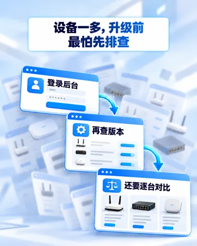

5G & 4G 路由器
ODU12
ODU302
XCR624
云服务
小星云管家
InCloud-Manager_1_ZH.png
打开 · 下载InCloud-Manager_2_ZH.png
打开 · 下载InCloud-Manager_3_ZH.png
打开 · 下载InCloud-Manager_4_ZH.png
打开 · 下载InCloud-Manager_AI_Firmware_Analysis_ZH.png
打开 · 下载InCloud-Manager_Batch_Upgrade_Overview_ZH.png
打开 · 下载InCloud-Manager_Efficient_Network_Operations_ZH.png
打开 · 下载
InCloud-Manager_Upgrade_Precheck_Process_ZH.png
打开 · 下载